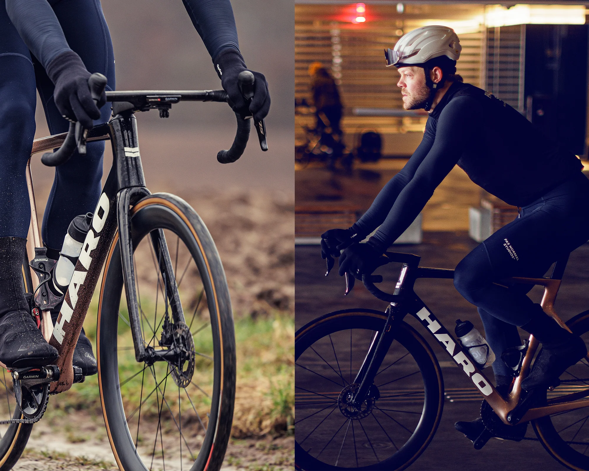

Nossos Produtos
Aqui na Loja de Bicicletas, oferecemos uma ampla variedade de bicicletas para atender a todas as suas necessidades. Seja para lazer, esporte ou transporte, temos a bicicleta perfeita para você.
Bicicletas de Montanha
Nossas bicicletas de montanha são ideais para trilhas e terrenos acidentados. Com suspensão robusta e pneus largos, elas oferecem conforto e segurança em qualquer aventura.
Bicicletas Urbanas
Para quem precisa de uma bicicleta para o dia a dia na cidade, nossas bicicletas urbanas são a escolha certa. Leves, ágeis e confortáveis, elas tornam seu trajeto mais agradável.
Bicicletas Infantis
As crianças também têm espaço na nossa loja! Temos uma linha completa de bicicletas infantis para todas as idades, com segurança e diversão garantidas.
Depoimentos de Clientes
Veja o que nossos clientes têm a dizer sobre as bicicletas e o atendimento da nossa loja.
"Comprei uma bicicleta de montanha e estou muito satisfeito. A qualidade é excelente e o atendimento foi incrível." - João Silva
"Minha filha adora a bicicleta nova. É perfeita para ela aprender a andar e se divertir." - Maria Fernandes
Sobre Nós
Fundada em 2000, a Loja de Bicicletas tem como missão oferecer produtos de alta qualidade e um atendimento personalizado para todos os ciclistas, sejam eles iniciantes ou experientes.
Novidades e Promoções
Fique por dentro das nossas últimas novidades e promoções exclusivas para você.
- Promoção de Verão: Descontos de até 20% em todas as bicicletas!
- Novidade: Chegaram as novas bicicletas elétricas.
- Evento: Participação no Passeio Ciclístico da Cidade.
Localização
Visite nossa loja física e confira de perto todos os nossos produtos. Estamos localizados na Rua Exemplo, 123 - Cidade, Estado.